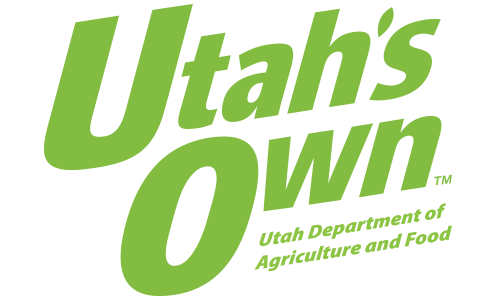

Utah Food Cuisine
A catering service for Utah that helps design
the menu and plans for you throughout the process. They do events of any kind and use professionally
trained chefs to prepare the meal. They are based in Salt Lake City which is a perfect hub for
culinary experiences.
Restaurant Supply
is a site that has everything you need to supply yourself with restaurant quality materials and tools.
It's placed in Provo, Utah and can ship as fast as they can across Utah with cheaply priced tools.
It has Asian cutlery, food processors, and basic run of the mill equipment like tongs.
Open Table
gives reviews, times, and reservations for restaurants all over. It helps bring in
business for these restaurants as well as letting customers know the nitty gritty about the
restaurant
they're going to. It makes the process as efficient as it can be, while also bringing an influx of
customers.

Utah's Own's
website allows for restaurants and local farmers to contact each other and set up deals. It
gives restaurants fresh, farm to table ingredients and farmers get more publicity and income from
the restaurants.
Fresh Seafood
supplies restaurants with hard to get seafood. Especially in a landlocked state, good
seafood is a true delicacy. Set in Salt Lake City Utah it's a perfect place to get your seafood from.